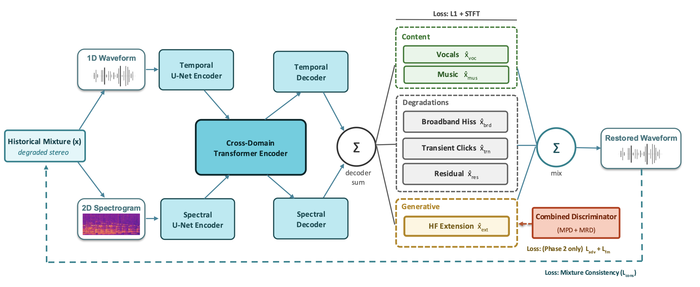

Overview
Restoration of historical recordings is typically framed as a rigid mapping from a degraded input to a single clean output, enforcing irreversible decisions about what counts as damage and inseparably hiding synthesized content within the final mix. Because archival aesthetics are highly subjective, we argue that restoration tools should empower users with interactive control rather than imposing a single predetermined outcome. To achieve this, we introduce RESTORE, a framework that reformulates historical restoration as a six-source semantic decomposition. By expanding a pretrained HTDemucs backbone, a single forward pass disentangles the mixture into vocals, music, broadband hiss, impulsive transients, and an unmodeled residual, while jointly synthesizing a high-frequency extension. Users steer the restoration by simply remixing stem gains, ensuring generative content remains isolated and auditable. Evaluated across diverse genres, RESTORE improves audio quality and FAD over the baselines while delivering genuine aesthetic steerability at 50× real time on a single GPU.
- Historical music restoration
- Bandwidth extension
- Music source separation

Press play
Each clip has a spectrogram (0–22 kHz) and one button per system. The spectrogram always shows the system you have selected.
Switch while it plays
Tap another system and the sound changes at the same moment in the music. Click or drag the spectrogram to jump around.
Keyboard
Space play / pause 1–9 pick a system ← → skip 5 s
Headphones recommended. Within each clip all systems are loudness-matched, so a louder result is never a better one. The RESTORE stems are normalised one by one instead, because a stem like hiss would otherwise be almost inaudible. They are hidden by default; use the “RESTORE stems” toggle under any clip to show or hide them on every clip.